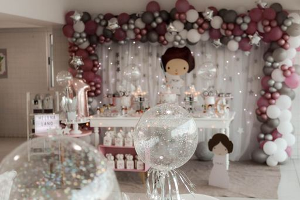
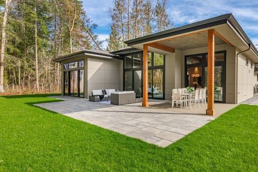
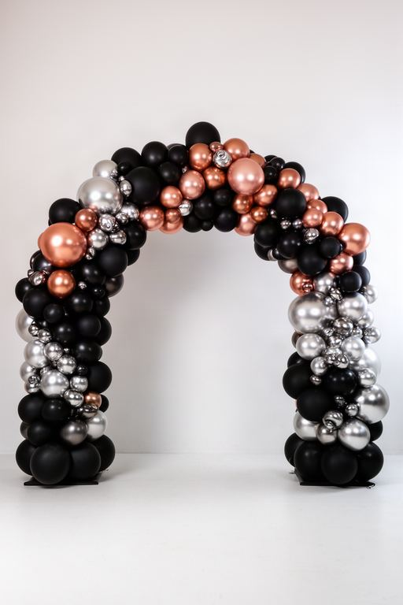
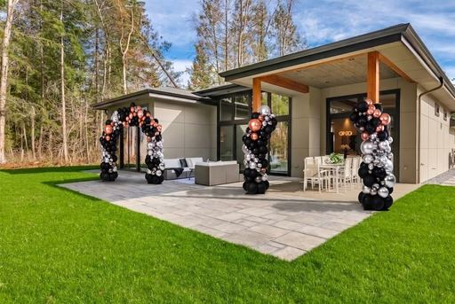

Reference photo + space photo · measured end to end
What the preview pipeline does today
Four reference photos and one space photo, run through the current two-stage pipeline. The same four cases are re-run unchanged after every remediation phase, so the columns below can be read against each other.
Scope, stated up front. Production builds the scene from the approved plan, never from the reference photo (route.ts:810), and a plan requires the Python resolver, a catalog snapshot and an approval token. Reproducing that here would mean writing to the production database during an evaluation run, so the scene is instead a fixed commercial template — one focal arch and two lateral columns — coloured with the palette the analyser measured in each photo. The repository's frozen plan fixtures were tried first and rejected: their product ids are synthetic and the vocabulary cannot resolve them. Consequently quantities and prices are out of scope, and the shape of the scene is the same in every case by design, so that only what a phase fixes moves between runs. Everything else is the real pipeline: the production analyser, the production caption compiler at hybrid settings, the real preflight, the approved v004 LoRA, the real Gemini composite and the real visual QA.
Reference and space are the inputs. Stage 1 is what the LoRA draws from the caption alone — no photo reaches it. Stage 2 is Gemini compositing that render onto the space.
ejemplo-07
Marco vino y plata
plan: plantilla-arco-dos-columnas · seed 101
generó

Reference

Space

Stage 1 · LoRA

Final · composited
Palette of the photo
negroplateadodorado rosaburdeosgris
Measured share (pixels)
negro 40%plateado 34%dorado rosa 16%burdeos 7%gris 2%blanco 1%
eventdecor_style_v2, an organic balloon garland arch of large and small matte black, glossy chrome rose gold and glossy chrome silver balloons as the central focal piece, two organic balloon columns of large and small matte black and glossy chrome silver balloons, one standing on the left and one on the right, flanking the main arch. set against a plain wall and floor, wide photorealistic event photograph, natural depth, grounded supports.
eventdecor_style_v2, an organic balloon garland arch of large and small matte white and glossy chrome rose gold balloons as the central focal piece, two organic balloon columns of large and small matte white and glossy chrome rose gold balloons, one standing on the left and one on the right, flanking the main arch. set against a plain wall and floor, wide photorealistic event photograph, natural depth, grounded supports.
placement failure EST_02_COL_IZQplacement failure EST_03_COL_DERappearance failure EST_02_COL_IZQappearance failure EST_03_COL_DERunexpected element: extra balloon cluster near wooden post
Venue-aware placement
placed2 openings2 walls5 obstacles2 anchors
Caption sent to fal · 429 of 688 chars
eventdecor_style_v2, an organic balloon garland arch of large and small matte pink, matte white and glossy chrome silver balloons as the central focal piece, two organic balloon columns of large and small matte pink and glossy chrome silver balloons, one standing on the left and one on the right, flanking the main arch. set against a plain wall and floor, wide photorealistic event photograph, natural depth, grounded supports.
eventdecor_style_v2, an organic balloon garland arch of matte fuchsia link balloons and large and small matte navy blue and matte pink balloons as the central focal piece, two organic balloon columns of matte fuchsia link balloons and large and small matte navy blue balloons, one standing on the left and one on the right, flanking the main arch. set against a plain wall and floor, wide photorealistic event photograph, natural depth, grounded supports.